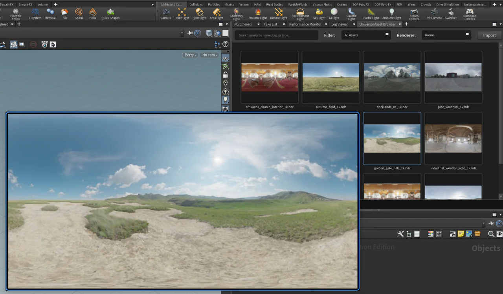
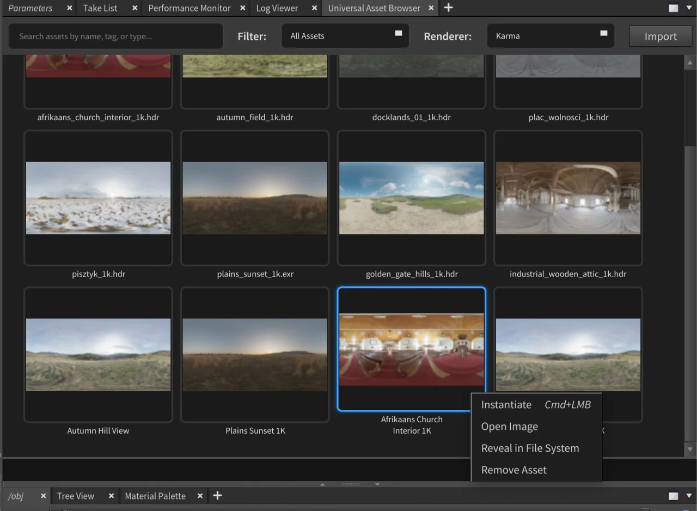
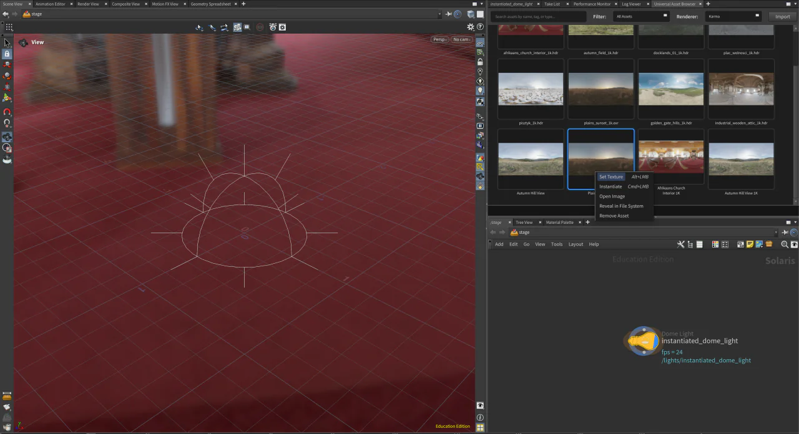

GUI Enhancements
In our meeting two weeks ago, we discussed various quality-of-life improvements to make the UAB useful for browsing HDRIs (its use case right now, before we expand into materials, then models, then animations). These were:
Allowing the user to zoom in/out of the grid of thumbnails to see more or fewer thumbnails. You can find the details of the implementation here.
Displaying a large preview window of the full-resolution image on hover.

(HDRI from PolyHaven, by Dimitrios Savva and Jarod Guest)
A new Detail view of an asset with a large preview image on the left and a vertical layout of metadata on the right.
Batch import a directory of HDRI's.
A new GUI control scheme, including a right-click context menu. The new scheme is as follows:
- In desktop, don't support asset instantiation. The context menu is static and has three options: Open Image (open the image in the system's default image viewer), Reveal in File System (open the image's parent directory in the system's default file browser), and Remove Asset (remove the asset from the database).
- In Houdini, support asset instantiation and asset swapping, depending on the state of the user's current scene, along with the desktop's options.
- If the user does not have a dome light selected, only show the option to instantiate a light.
- If the user does have a dome light selected, show both the option to set the current light's texture and to instantiate a light.
- Support Cmd/Ctrl + LMB on a thumbnail to instantiate an asset immediately and Alt/Opt + LMB on a thumbnail to immediately set the currently selected node's relevant parameter (in this case, the texture parameter of a dome light).


This one was a bit of a nightmare, since the context menu has to be, well, context-aware. So the flow in the MVP architecture of the application looks something like this: right click caught by thumbnail -> pass it up to the presenter -> presenter queries Houdini's state -> presenter returns menu actions and their associated callbacks -> thumbnail instantiates a new context menu with those actions.
To implement this:
Thumbnails catch QT's
contextMenuEventand emit adictsignal containing two key/value pairs:{"object": self, "position": event.globalPos()}, so the signal is emitted with this specific thumbnail and the global position of the right click.- If you look at the implementation, you'll notice that the signal is emitted as an
object, not adict, despite the fact that it is adict. This is because of a quirk of PySide: signals emitted asdict, then translated through the C++ layer, are converted to someQVariantunder-the-hood, as C++ of course does not have Python'sdicttype. When Houdini is initializing the mainQWidgetand performing the bindings, it then looks for aSlotto connect the signal to of typeQVariantMap, not of typedict. However, PySide doesn't support theQVariantMaptype explicitly, so marking theSlotas being of typeQVariantMapfails, but so does marking it as typedict(since the signal has been converted to someQVariant). This causes the bind to fail because of the type mismatch. To avoid this behavior, the signal is simply emitted as anobject, and theSlotis marked as receiving anobject.
- If you look at the implementation, you'll notice that the signal is emitted as an
Base Presenter has a method
get_current_context_menu_optionswhich is implemented by its derived classes (raisesImplementedByDerivedClassErrorif somehow called itself, which should never happen, but you can never be too careful), which the context menu request is connected to. The Houdini Presenter (a derived class of Base Presenter which implements Houdini-specific logic) then queries the currently selected nodes, and creates a list of context options depending on which nodes are selected. Each option is adictwith keys forlabel,callback, andshortcut. This method is connected to the context menu request, which (as mentioned in step 1) sends its associated thumbnail.Thumbnailhas a method tocreate_context_menu, which is then called and passed the list of options and the position at which to create the menu.Thumbnail'screate_context_menumethod instantiates aQMenuand creates aQActionfor each option, which is then added to the menu. Once all of the actions have been created, the menu is executed, and the user sees the context menu.- If you look at the implementation, you'll notice that the action's callback is passed via as a default argument of a lambda function. This is because of a quirk with the way that Python implements anonymous functions. The lambda captures the option variable, but lambdas are passed variables by reference, not by value. Since it's called at execution time, this means that each action's callback points to the same reference (the final option). To avoid this, callback is passed as a default variable to the lambda, causing it to be evaluated at definition time, rather than execution time.
Other GUI (or GUI-dependent) Enhancements
- New GET endpoint for searching queries a server endpoint that filters by name, description, and tags.
- Previously, search was a temporary solution of matching names in a dictionary of the database's current assets that was loaded on init.
- Interestingly, searching felt more responsive after implementing a 200ms delay before querying to give the user time to keep typing. Without this, the browser's loading was always a bit behind what the user was typing with each keystroke, and it felt slow. The tiny delay makes it feel faster.
- New GET endpoint to get a specific asset by its ID.
- New PUT endpoint to update a specific asset by its ID.
- Importing an asset now creates a readable display name, records its date added, and tags it with its file type.
- Editing asset metadata is now fully implemented, allowing users to change name, path, description, tags, author, and creation date.
- ID and date added are not user-editable.
- Added support for .exr HDRI files, so now both .hdr and .exr are supported.
- The browser now periodically sends a request to refresh its assets, enabling a simple sync between multiple GUI sessions of the UAB.
- This is a very basic implementation of the planned real-time synchronization across multiple live GUI's and is not at all final. I'll talk more about the future of this feature the client/server section.
Launcher Shenanigans
Designing a system with a single entry point that works across multiple environments has been extremely challenging. One of the ways it has been so challenging is this: in the desktop environment, an entire QApplication has to be initialized, and the lifecycle of the program is easy: it's as long as the QApplication is alive. However, in Houdini, there's already a running QApplication, and what Houdini needs is not a new QApplication, but a root QWidget for a Python panel that will live inside Houdini. When initializing a Python panel, Houdini uses an onCreateInterface function, which, crucially, must return that root QWidget. This means that the scope of everything external to Houdini that has to be launched must happen before the widget is returned, and outside the scope of onCreateInterface. As the UAB relies on a server for all its asset interactions (the reason for which will become clear in the next section), launching it on Python panel init while still returning what Houdini expects was a challenge to implement. After much trial and error, here's how it works:
- Determine the current environment.
- Currently either desktop or Houdini, but is easily extensible.
- Look for a currently running server. If there isn't one, start one as a new detached subprocess.
- Register as a client with the server.
- Launch the appropriate GUI.
- On desktop, start a
QApplication, initialize aQMainWindow, and set a newMainWidgetas its central widget. Signals to gracefully shut down the server on close are connected. - In Houdini, set a global reference to the server process so that it still exists once
onCreateInterfaceexits, then return a newMainWidget.
- On desktop, start a
Client/Server Model
As referenced above, there is now a single server instance that all clients communicate with. This is to eventually enable real-time synchronization across frontends via sockets, allowing users to import an asset created in one DCC and have immediate access to it elsewhere (think a model or animation created in Blender that's imported to the UAB and then immediately accessible in Unreal). This is not a feature planned anytime soon, but the new client/server model is the first step there. Currently, it works as follows:
- If a frontend is launched and there's no running server, start one and register with it.
- Registry is a POST request to a
dictstored in memory of each client as<process id>_<dcc name>, ex.12345_desktop.
- Registry is a POST request to a
- If a frontend is launched and there is a running server, register with it.
- If a frontend closes, deregister with the server.
- On deregistration, if there are no more registered clients, shut the server down.
Next Steps
We're currently in discussion regarding what makes the most sense for the next features. The big contenders right now:
- PolyHaven support: accessing PolyHaven assets directly inside of the UAB.
- Materials support: accessing materials (collections of textures with some way of previewing them).
- Unreal Integration: integrate the UAB with Unreal, showing it and its usefulness in multiple DCC's simultaneously.
Next QOL Features
Collections: I'm pondering how best to implement collections of assets, as this will be very helpful for multiple LOD's of the same asset, mapping textures to materials, materials to models, etc. in the future. This would be immediately helpful for multiple LOD's of the same HDRI, which are currently completely unrelated.
Badges for helpful asset information: in the bottom of thumbnail images, add small badges for common, helpful information, like file type and LOD.
Favorite assets: allow users to favorite assets and filter by favorite.
Recent assets: keep track of the assets a user has used most recently and allow them to filter by recent.
Final Thoughts
I'm really happy with the progress over the last two weeks. It feels like the UAB has hit the point of being genuinely useful, and that is an absolutely awesome feeling.
If anyone has any feature suggestions or questions about the project, feel free to get in touch with me.